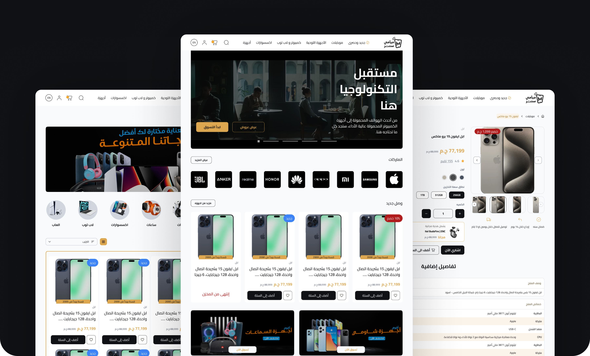
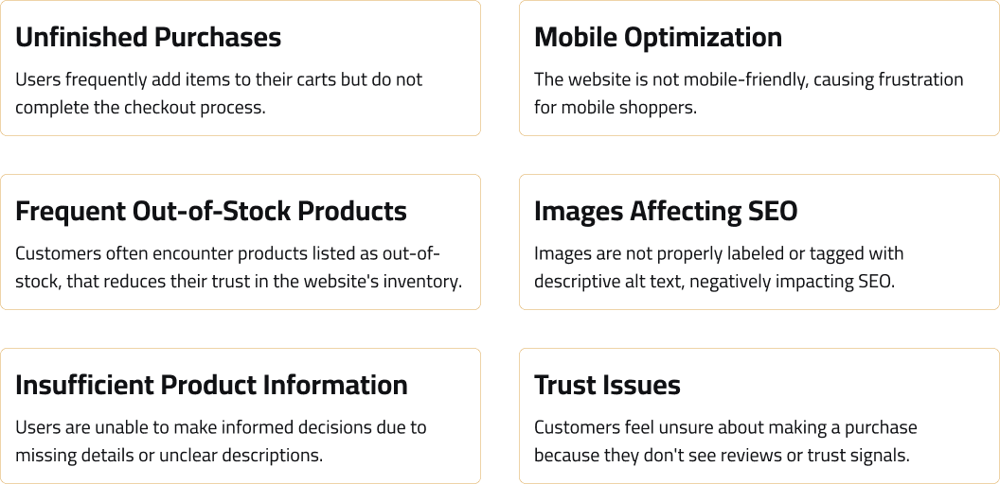
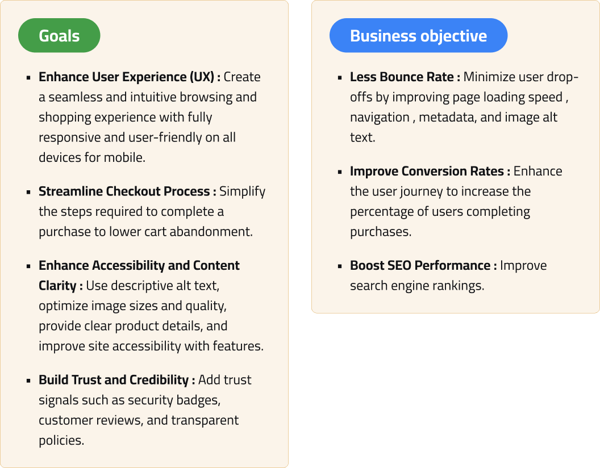
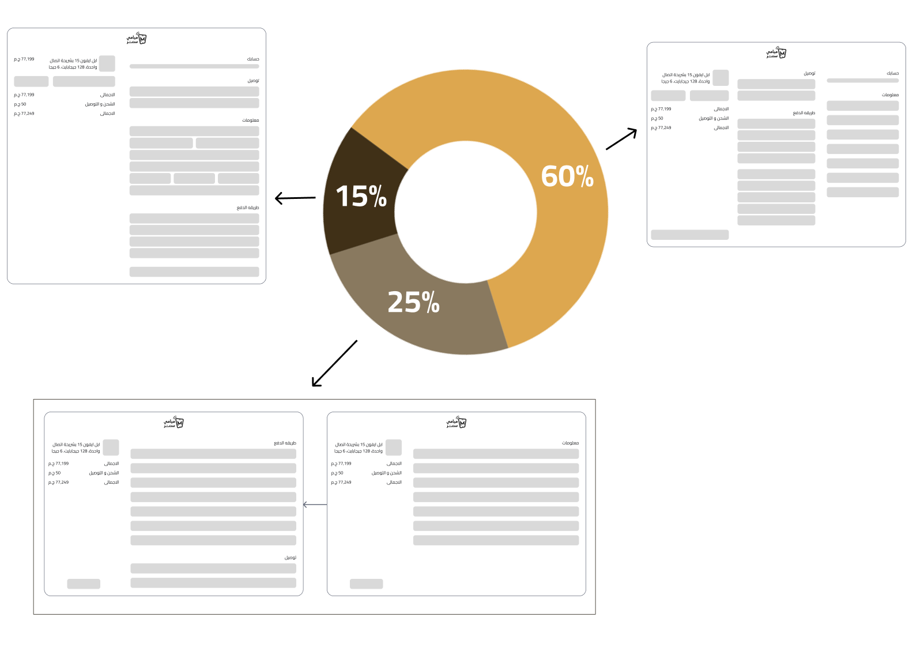
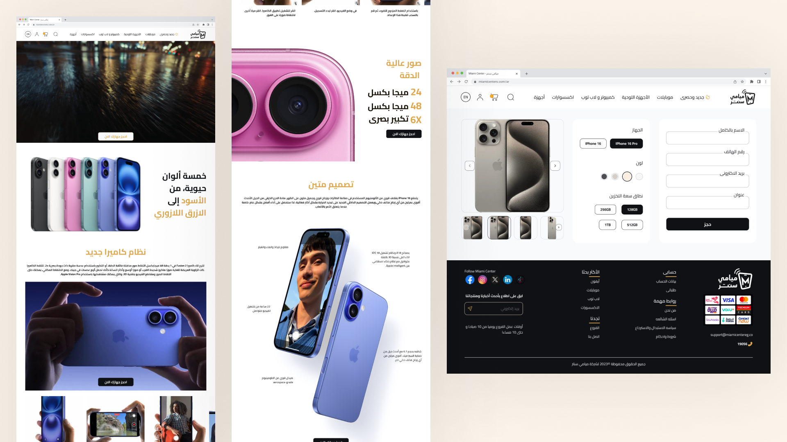

Miami Center Ecommerce Redesign
Checkout funnel overhaul and iPhone 16 pre-order experience driven by a competitive audit that exposed a high mobile bounce rate compared to competitors.

Project Overview
Miami Center is a leading eCommerce platform in Egypt, specializing in mobile devices, with a focus on Apple products, tablets, laptops, and accessories, offering a shopping experience for tech enthusiasts.
Miami Center struggles with a high bounce rate of 38.29%
Using SimilarWeb, I found Miami Center's bounce rate was 38.29%, even higher on mobile, and worse than its competitors. Customers were dropping off during browsing and cart stages due to cluttered product discovery and checkout friction. Addressing this friction required streamlining the buying journey, reducing form complexity, and improving mobile responsiveness.
Source: SimilarWeb

Enhancing User Experience and Streamlining the Mobile Checkout Funnel
To address mobile drop-off and streamline customer purchase journeys, the strategic redesign aligned user goals with core business objectives. The focus was on streamlining the checkout funnel to minimize friction, improving mobile responsiveness, and building trust through clear product details and security badges. Additionally, performance and SEO optimizations were introduced to ensure a seamless, accessible shopping journey across all devices.

Tradeline Leads in Engagement Metrics, While Dubai Phone Excels in Traffic and User Retention

Why Do Customers Abandon Their Carts Before Completing Checkout?
To find the best way to solve users' checkout problems, we tested early on real traffic. Since Miami Center regularly runs discount campaigns, we built three checkout versions based on the existing design and measured which one led more users to complete their purchase.
Findings:
Each campaign link sent users to a different checkout version when they clicked to buy a product. Across all three versions, around 40% of users who started the booking flow in the campaign completed their iPhone 16 booking. Version B performed best , with the highest checkout completion rate of the three. The chart below shows how the versions compared.

Shaping the Launch of Apple iPhone 16 Pre-Orders in Egypt
With the launch of the Apple iPhone 16 and iPhone 16 Pro, we created a dedicated pre-order page tailored for customers. The page was designed as Apple-style to streamline the booking process and to make the first e-commerce store booking for iPhone 16 and iPhone 16 Pro. By focusing on clear calls to action, product highlights, and an intuitive layout, we aimed to capture excitement and make it easy for users to book.

Delivering a website and mobile responsive for Miami


Key Takeaways
The brief was that people were not buying on the website, and the first challenge was finding out why. Instead of redesigning from assumptions, I started with research: a SimilarWeb audit, a competitor analysis, and an A/B test of three checkout versions.
That research pointed to the mobile experience and checkout friction as the main problems, and it gave every design decision a reason. The biggest lesson was to diagnose before designing.